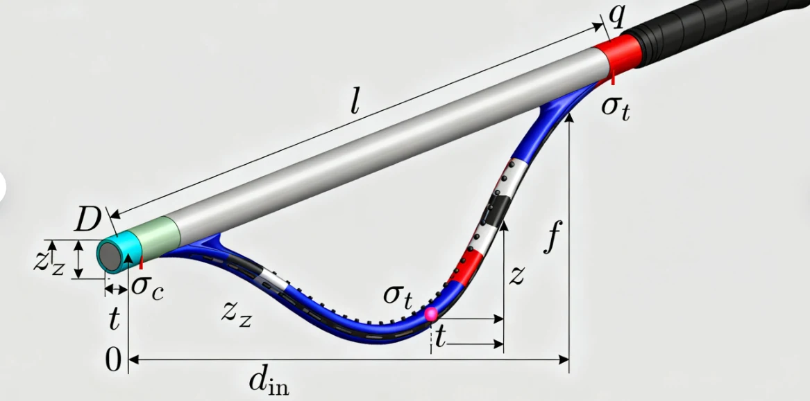
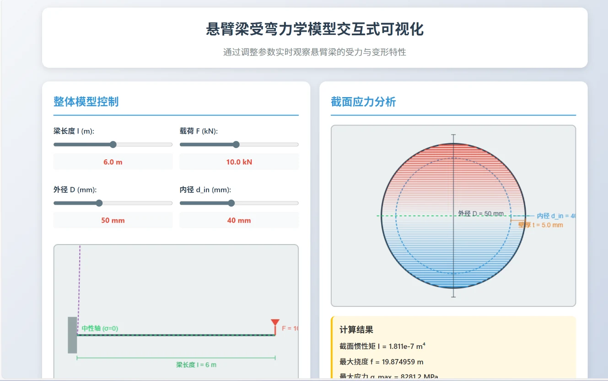
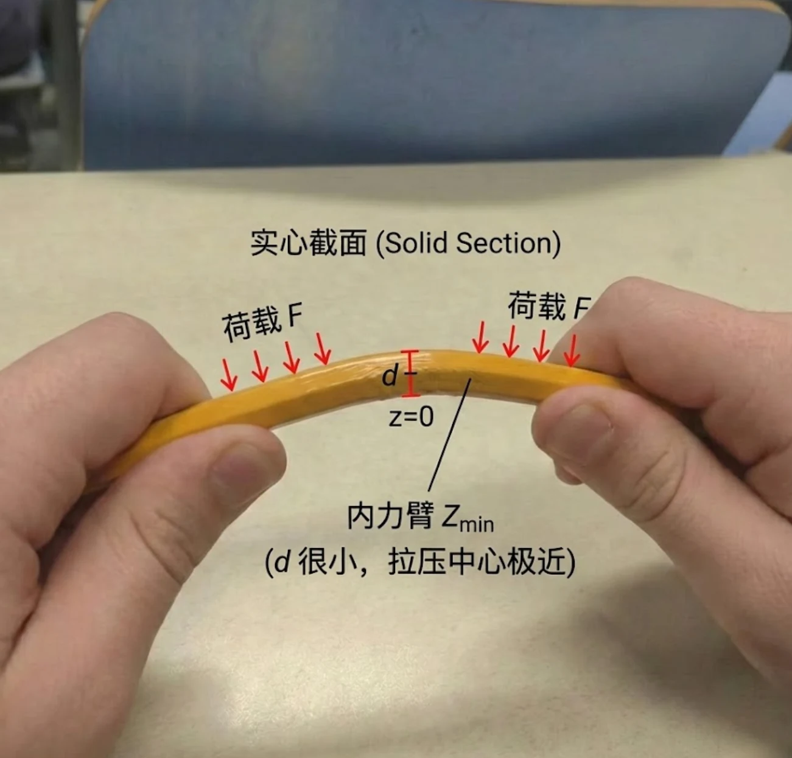
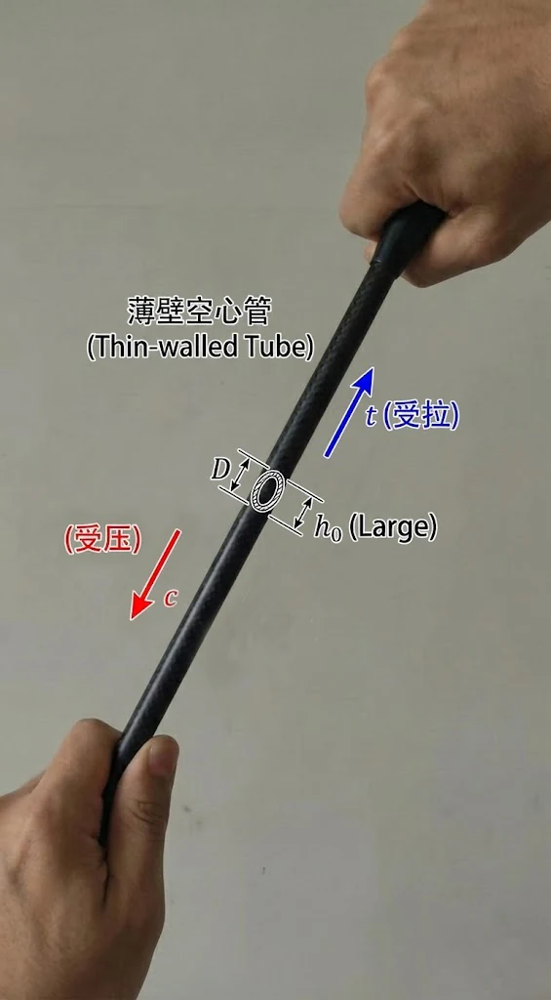

大连交通大学 · 智能建造23
我的原作极轻自重下的刚度奇迹——羽毛球拍中杆的“空心”截面优化
于鑫伟
（1）表达力学问题：轻量化与抗弯刚度的极限博弈
1. 问题的物理意义：速度 vs 强度
在羽毛球运动中，为了追求挥拍速度，球拍必须极轻（通常在 3U/4U 规格，即 80g-90g 左右）。然而，在扣杀瞬间，中杆（Shaft）作为典型的悬臂梁（Cantilever Beam），需要承受巨大的弯矩 和剪力 。
若截面刚度不足，过大的挠度 会导致击球延迟（滞后），甚至造成中杆折断。根据受弯构件挠度公式：
（注：悬臂梁受均布力简化模型）
要减小 ，必须增大抗弯刚度 。但在材料弹性模量 （碳纤维）既定的情况下，如何在使用极少材料（小质量 ）的前提下，获得极大的惯性矩 ，是结构设计的核心难点。
2. 关键影响因素：刚度与质量的关联变量
根据悬臂梁受均布力挠度公式
，结合材料与结构特性，核心影响因素可归纳为 3 点：
材料弹性模量E：羽毛球拍中杆普遍采用碳纤维材料，E值远高于金属，是刚度的基础保障，但其数值相对固定，优化空间有限；
截面惯性矩I：直接决定刚度强弱，I值越大，挠度f越小，而I的大小与截面几何形状、尺寸分布密切相关（如空心管的外径D、内径）；
构件质量m：质量与截面面积A正相关，轻量化要求A尽可能小，但A的减小可能导致I下降，二者形成天然制约。
3. 优化趋势：空心截面的效率跃升
对于实心圆形截面（如铅笔），其惯性矩为 。
而羽毛球拍中杆采用了空心圆环截面（Annular Cross-section）。在截面面积 （即材料用量）相同的情况下，空心管可以将直径 做得比实心杆 大得多。
空心截面惯性矩公式为：
通过将材料布置在远离中性轴的“外圈”， 值随着直径 的三次方急剧增加，从而实现了“以几何换刚度”。
4. 力学图示：悬臂梁受弯力学模型
模型简化：中杆固定端（与拍框连接处）为悬臂梁约束点，自由端（拍柄方向）承受击球时的均布载荷q（或集中载荷F）；
关键参数标注：梁长度l（中杆有效长度）、截面外径D、内径(d)、壁厚t；中性轴(z-z)（截面中心轴线，应力为 0）；
受力与变形：载荷作用下，中杆产生向下挠度f，截面左侧为受压区应力(σc)，右侧为受拉区应力(σt），受压与受拉合力点间距即为内力臂z；
公式关联：图示直观呈现f与l、E、I的关系，明确I增大（如空心截面D扩大）可显著减小f，验证优化逻辑的合理性。


（2）生活中体现：中杆 vs 铅笔的刚度实验
【实验设计】
利用身边的羽毛球拍和一支实心铅笔（或筷子），对比“空心大直径”与“实心小直径”在受弯时的表现。
1. 对照组：实心截面（材料利用率低）

配文说明： 实心杆件虽然内部充满了材料，但大量材料堆积在中性轴附近（应力 的区域），对刚度贡献极小。受力时，受拉区与受压区距离过近，内力臂 不足，导致抵抗弯矩的能力低下。
2. 实验组：空心截面（材料利用率高）

配文说明： 羽毛球拍中杆利用薄壁空心构造，在不增加重量的前提下，将截面外径 撑大（约为铅笔的1.5倍）。这一设计强行拉大了受压纤维与受拉纤维的距离，极大地增大了惯性矩 ，保证了击球瞬间力量的精准传递。
（3）对照《结构设计原理》内容：内力臂与截面核心原理
羽毛球拍的设计哲学，与教材中受弯构件的设计原理完全互通：
1. 内力臂 的最大化原理
在教材受弯构件正截面承载力章节中，核心公式为：
其中 是内力臂（Internal Lever Arm）。
对照分析： 就像混凝土梁将钢筋布置在最外沿一样，羽毛球拍将高强度的碳纤维布置在空心管的最外壁。这使得截面上受压合力点 与受拉合力点 之间的距离 接近于管径 。在材料总量 （重量）受限的情况下，最大化 是提高承载力 的唯一途径。
2. 截面惯性矩 与刚度
教材中提到，受弯构件的刚度 （或 ）主要取决于截面的几何特征。
对照分析： 对于实心铅笔， 很小，刚度 极低。对于球拍中杆，虽然壁厚 极薄（ 小），但由于有效高度 （即直径 ）较大，且 以平方项贡献于刚度，因此空心结构获得了极高的比刚度（Specific Stiffness）。
3. 构造要求与局部稳定
《结构设计原理》中常强调“最小保护层厚度”或“最小壁厚”以防止局部破坏。
对照分析： 球拍中杆虽然追求壁薄以减重，但也不能无限薄，否则会发生局部屈曲（Local Buckling），即管壁像易拉罐一样瘪掉。这对应了教材中关于构件稳定性（Stability）的限制——截面的径厚比（）必须控制在合理范围内。
这是一份便于网页阅读的原作视图，保留提交内容的文字、图片和基本顺序；公开页面不显示学号。